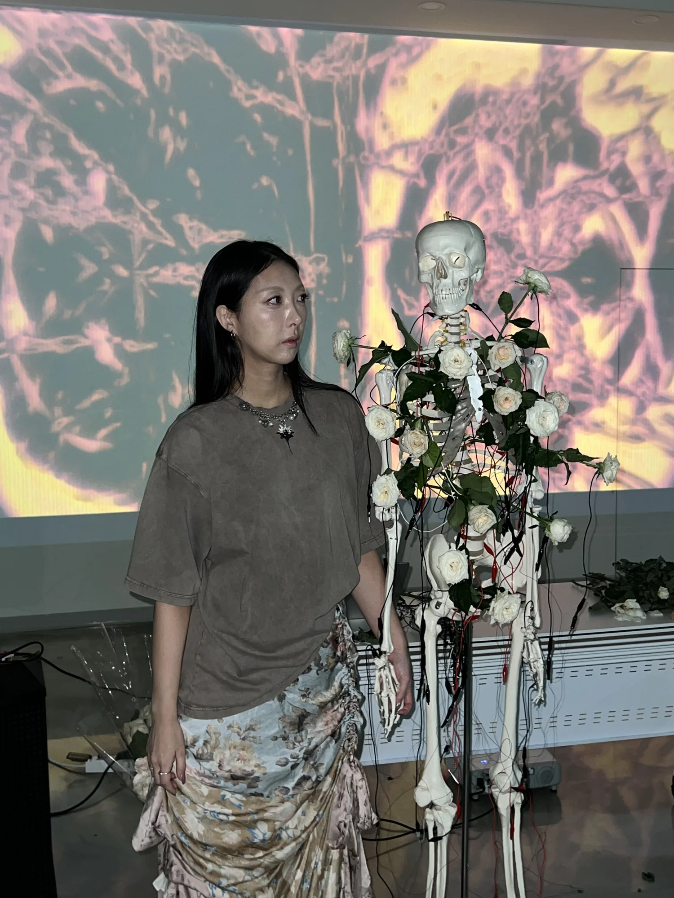
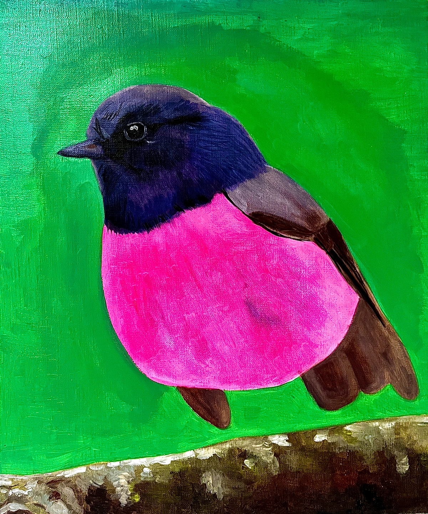

10월
Body Morphosis
2인전 / 인터랙티브 오디오비주얼 작품
RMIT University, Melbourne
아티스트
서울과 멜버른을 기반으로 활동하는 한국계 호주 인터랙티브 오디오비주얼 아티스트입니다.

Minnie Park는 서울과 멜버른을 기반으로 활동하는 한국계 호주 인터랙티브 오디오비주얼 아티스트입니다. 생장미, 촉각적 인터랙션, 사운드, 빛과 무빙이미지를 결합한 설치를 통해 정서를 신체적이고 관계적이며 문화적으로 형성되는 경험으로 살펴봅니다. 2024년에 시작되어 The Meta Kibun Project를 포함하는 Meta Rose를 통해 감정의 양가성, 문화적으로 형성된 감정, 관계적 터치와 기억을 다루는 서로 다른 참여형 시스템을 구축합니다.
2025년 RMIT University의 Honours 연구에서는 The Meta Kibun Project의 인터랙티브 전시와 인터뷰·설문을 통해 관객의 경험 서술을 살펴봤습니다. TouchDesigner를 중심으로 활동하는 아티스트 주도 커뮤니티 TouchCollective의 공동 설립자이기도 하며, 창작 실천과 신체적 참여, 기술적 실험을 연결하는 워크숍을 발전시키고 있습니다.
작가 노트

2021년 The Pink Bird를 그릴 때, 나는 새에게 다리가 없다는 사실을 알아차리지 못했다. 나중에 그림을 다시 보며 그 안에서 나 자신을 발견했다. 자유롭게 날지도, 어디에도 내려앉지도 못하는 모습이었다. 멜버른의 록다운 동안 집에서 유화를 그리며 나는 자꾸 핑크에 손이 갔다. 그 색은 나다웠고, 내가 예술을 놓지 않았음을 떠올리게 했다. 핑크는 내가 살아 있다는 감각을 주었다. 삶에서 깊은 고통을 겪던 시기에, 나는 설명할 수도, 서로 조화시킬 수도 없는 감정들 앞에서 혼란스러웠다. 서로 모순되는 감정들이 어떻게 동시에 모두 진실하게 느껴질 수 있는지 이해하고 싶었다. Meta Rose는 그 마음에서 시작됐다.
장미에서 나는 이해하고자 했던 양가성을 발견했다. 아름다움과 향기, 부드러움이 가시와 함께 하나의 살아 있는 존재 안에 분리되지 않은 채 공존하고 있었다. 내게 장미는 아름다움을 잃지 않으면서도 슬픔과 기쁨을 동시에 품을 수 있는 존재다. 이 공존은 작업의 시각적·물질적 언어가 되었다. 시간이 흐르며 내가 이 공존을 바라보는 방식도 달라졌다. 나는 어려운 감정을 찬찬히 바라보되 그것이 다른 모든 것을 가리지 않도록, 가시를 알아보면서도 꽃을 더 온전히 받아들이는 법을 배우고 있다.
인터랙션은 내 오디오비주얼 작업에서 빼놓을 수 없다. 참여가 정서적 경험을 깊게 하고, 관객이 작품을 더 개인적으로 경험하며 자신의 감정에 질문을 던질 계기를 열 수 있다고 믿기 때문이다. 이 작업을 통해 나는 인간의 감정을 컴퓨터 언어와 데이터, 방정식으로 표현하는 것을 평생의 목표로 삼고 있다. 주관적인 경험을 서로 더 이해하고 나눌 수 있는 형태로 옮겨보고자 한다. Meta Rose는 인간의 감정에 대한 나만의 방정식을 계속 찾아가는 자리다. 이 만남들이 핑크와 예술이 내게 주었던 위안과 힘을 다른 이들에게도 전하고, 각자가 자기만의 핑크를 발견할 여지를 열어주기를 바란다.
리서치 →전시 / 퍼포먼스 / 공공 프로그램
전시, 퍼포먼스, 워크숍과 공개 프레젠테이션을 시간순으로 정리한 주요 이력입니다. 전체 기록은 2026 Artist CV에서 확인할 수 있습니다.
10월
그룹전 / 인터랙티브 설치
LUCKY777 / Platform Presents, Abbotsford Convent, 멜버른
10월
그룹 오디오비주얼 전시 / 인터랙티브 장미 설치
XFLOS, Collingwood Yards, 멜버른
9월 / 10월
전시 / 인터랙티브 오디오비주얼 설치
Melbourne Fringe Festival / The Mission to Seafarers Victoria, Celia Little Room, Docklands, 멜버른
10월
아티스트 주도형 TouchDesigner 워크숍
TouchCollective / Platform Presents, The Mission to Seafarers Victoria, 멜버른 / Minnie Park 진행
8월
개인전 / 인터랙티브 오디오비주얼 설치
서울프린지페스티벌 / 미진플로어, 서울 마포구 연남동
4월
그룹전 / 인터랙티브 설치
Platform Presents: Hybrid / 118 Greeves Street, Fitzroy, Melbourne
4월
아티스트 주도형 참여 워크숍
Seventh Gallery, Melbourne / Minnie Park 진행
11월
그룹전
Norla Dome, Docklands, Melbourne
10월
아티스트 주도형 워크숍
Science Gallery Melbourne / TouchCollective
9월
개인전 / 창작 실천 기반 Honours 리서치
RMIT University, Melbourne
7월
개인전
무공간, 경기도 성남시
3월
커미션 무빙이미지 / 스크린 프레젠테이션
PayPal Melbourne Fashion Festival / Melbourne
11월
라이브 오디오비주얼 퍼포먼스
Miscellania, Melbourne
10월
2인전 / 인터랙티브 오디오비주얼 작품
RMIT University, Melbourne